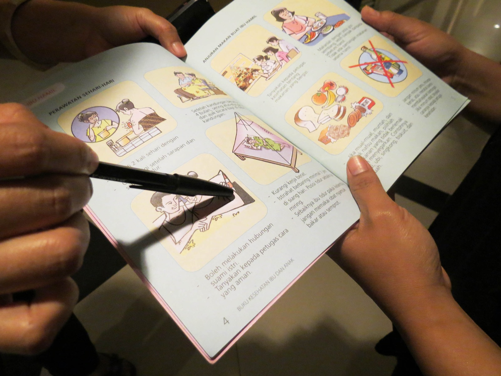
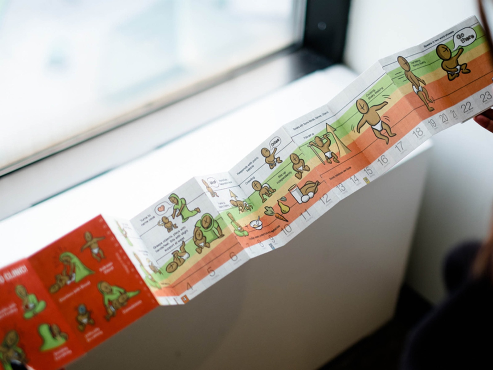

How does a child's immunisation card actually figure in the health ecology of very different countries? And what would a better record, paper or digital, need to do for parents, health workers and health systems?
Case study · Centre for Knowledge Societies × Gates Foundation & WHO · 2013–14
Redesigning child immunisation records across three countries
Cross-cultural field research in Bihar (India), Kenya and Indonesia into how a paper health card works within a family's health system. The findings shaped design and technology recommendations for its digital future.

The question
My role
I designed and managed a multi-phase field research programme across three countries, and led a multidisciplinary team of 7+ designers, engineers and researchers. I ran the research operations end to end: briefing agencies, managing local teams, developing screeners and recruiting participants in each country. I also designed the evaluation framework for a global crowdsourcing challenge, led post-field analysis workshops, and co-authored the final recommendations.
Methods
- Ethnographic field studies
- In-depth interviews
- Concept & prototype testing
- Surveys
- Evaluation framework design
- Synthesis workshops
- Recruitment & screeners
- Agency management
I combined qualitative and quantitative methods. I built an evaluation framework that narrowed 433 entries from a global crowdsourcing challenge to 30 cards, then tested those in all three countries to compare what worked for each audience.
Who I worked with
The Centre for Knowledge Societies team, the Bill & Melinda Gates Foundation and the World Health Organization, plus local health workers, parents and field partners in each country. The recommendations were presented to a panel of experts from WHO, UNICEF, the Gates Foundation, GAVI and IxDA in London.
Key insights
The card isn't just a medical record. Cultural beliefs, family roles and local health systems shape how it's used and kept, so a single global design won't work.
TODO: add one specific, plainly stated finding from Bihar, Kenya or Indonesia
Impact
- The analysis became design and technology recommendations in the Records for Life report, presented to WHO, UNICEF, the Gates Foundation and GAVI.
- Melinda Gates named CKS as one of nine players changing the face of routine immunisation, citing Records for Life.
- Turned the findings on digital health service uptake and barriers into recommendations for service design and institutional change. I delivered them as multimedia stories and design toolkits for audiences with different levels of research literacy.
- TODO: any follow-on adoption, pilots or funding
Artifacts

